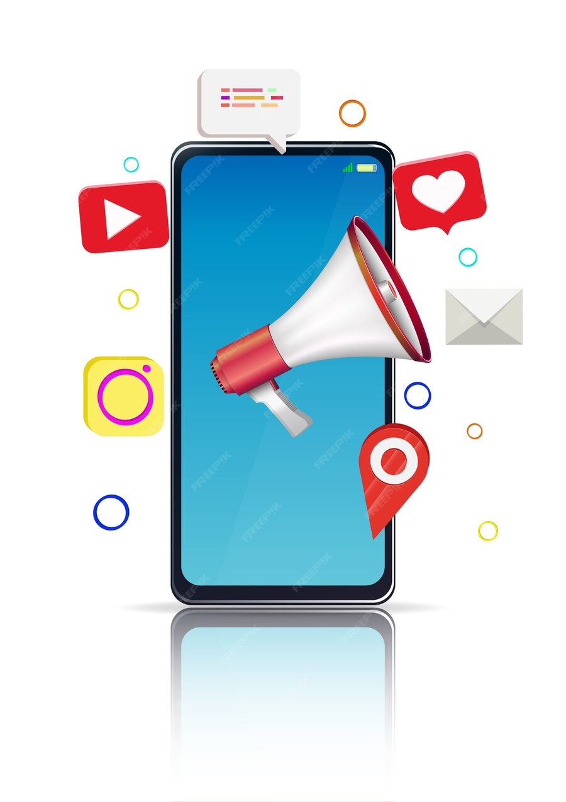

English

Allysocials is a SMM Panel for increasing social media followers
Allysocials goal is to help people increase their followers on Instagram and TikTok. It provides effective SMM services. These services are important for developing a digital presence and increasing communication with the audience.
The service provides unique SMM Services methods on social media. It helps build a recognized digital identity.
We provide you on the Allysocials SMM platform
- Enabling users to increase followers on social media platforms.
- Effective and certified digital marketing services.
- Increase interaction with the target audience.
- Enhance the digital presence of brands.
- Advanced technical and analytical support to measure progress.
- Introduction to the importance of increasing followers on social media
Having a large and active audience on social media is important for achieving success in digital marketing. Business owners face the problem of not having many followers. This makes their content less visible to the audience.
Users prefer to interact with accounts that are followed by many, which increases the importance of increasing the number of followers.
Transforming this situation takes a long time, it may be years. In the meantime, follower increase services can be used to speed up the process. These services are an effective way to attract customers and publish content.
Allysocials provides many services, including increasing followers on different platforms. These services include platforms such as Instagram, Facebook, and TikTok, as well as YouTube and websites.
The company provides fast and high-quality SMM services. It also provides a guarantee on services and a technical support team equipped around the clock.
It is recommended to reduce requesting large quantities of services at one time. Instead, service requests can be distributed over periods. This helps in gaining experience and increasing brand awareness.
Businesses that focus on increasing followers improve people's awareness of their brand. This leads to wider spread and greater interaction on social media.
SMM Panel Services
Social media marketing services provide innovative solutions. They enable companies and individuals to reach the target audience. Increase interaction and participation.
Their benefits are not only increasing followers. They also include improving the performance of accounts on different platforms.
How SMM Panel Services Work
Premium marketing services help improve your digital presence in many ways. Including:
- Increase followers on Instagram, Facebook, and Twitter platforms.
- Improve search engines, which improves your site's ranking and increases organic visits.
- Increase interactions such as likes and comments. Increase your reach and enhance people's trust in you.
Best companies for increase followers And SMM Panel services
"Allysocials" stands out as a leader in increasing followers among the best companies to increase followers. This company provides comprehensive services that include:
"Allysocials " is one of the Best SMM Panel Services Providers for increasing followers. It provides effective services that achieve the desired growth. It helps you communicate well with the audience. It facilitates the development of digital marketing strategies successfully.
Increase Instagram followers using Allysocials smm
Allysocials is one of the best companies in the field of providing Instagram followers. It provides services aimed at increasing the number of followers. The price of services starts from only $ 0.01. The services include increasing followers, likes, views, and impressions.
Allysocials is characterized by the speed of executing orders. Once you submit the order, work will start immediately. It also provides high-quality services. These services achieve great results for a long time. This helps improve the brand's reputation and increase audience interaction.
Allysocials server is the best and fastest. It helps you buy followers on social media. It has been trusted by many customers since 2014. There is a customer support team available 24 hours a day. They are always ready to solve any problem or answer any inquiries raised by customers.
You can access a wide range of packages on the Allysocials website. They meet all your needs and fit your pocket. All followers are real and there is nothing fake.
Allysocials offers services at competitive and transparent prices. This maintains quality and speed for its clients.
With long-term success and a solid reputation,Allysocials Panel continues to provide effective solutions that help increase Instagram followers and promote business across social media.
Increase TikTok Followers and Achieve Fast Success
TikTok. A popular platform loved by businesses and influencers. Allysocials helps you grow your followers quickly. It offers services such as increasing likes and views. These services help you attract more people.
Basic concepts of providing followers
To increase its followers.Allysocialsrelies on the quality of interaction. Safe methods guarantee you to increase followers. Various packages that meet your needs precisely.
The importance of likes and views
TikTok likes and views are very important. Allysocials helps you to bring interaction. This enhances the popularity of your content. It also builds a strong relationship with your audience.
Benefit from Instagram Followers Boosting and Growing Business Accounts
Insta Followers Boosting is an important name in the world of business account promotion. Allysocialsplatform protects you with a safe and capable environment. By providing you with followers gradually, it ensures sustainable growth for your account.
The service provides useful analytical tools. These tools help in progressing and improving strategies.
Determining the emotional range of words is good at improving interactions. There are tools that show important positive words available. These studies show the positive impact of these words.
NAACL-2015 study confirms the role of paid tools in improving the image on social media. Increasing followers enhances positive interaction. These benefits extend to raising the level of brand exposure digitally.
TikTok Views Booster:
Key Benefits
TikTok is a great platform to increase your online reach. TikTok views booster services help you improve your content. How? It depends on data analysis and understanding the audience.
Features of increasing views
Increasing TikTok views helps you reach a lot of people. Through it, you can create interesting content. This increases the chances that people will notice your content.
Some of the main features of this service include:
• Increase audience attention to your content.
• Improve people's interaction with your videos.
• The possibility of spreading your content more widely naturally.
Analyzing Successful Strategies
Allysocialsrelies on data to improve the efficiency of your content. Providing views enhances your business image and increases the chances of cooperation with companies. Allysocials achieves great success in developing TikTok accounts.
Tactics such as providing views can change the future of your content. These services are essential to achieving your creative goals. Many studies show their effectiveness in promoting content.
The Impact of Social Media on Business Activity
Social media enhances the digital identity of companies and increases their online presence. Instagram and TikTok can attract new customers and enhance their interactions with the company. This increases trust and helps achieve marketing and business goals.
Allysocials provides services to increase the followers of companies on social media.
These services include sites such as Facebook, Twitter, Instagram, and TikTok. These services help companies improve their digital presence easily. After 8 years in the business, Allysocials has succeeded with its effectiveness and efficiency. Business owners can use its services to improve their digital activity at a low cost. This increases the power of social media influence on the company’s activity.
Allysocialsservices bring real followers who are interested in the content.
This increases the power of influence on the company’s activity through social media. With the efficiency and speed it provides, digital presence can be easily improved. This contributes to achieving digital success.
Using Allysocials Servers to Increase Followers
Using servers is one of the effective ways to increase followers quickly. Amazing SMM helps people find good places to increase followers.
Basic steps to use servers
1. Register in a free followers server and make sure it is reliable.
2. Choose the necessary service such as increasing followers, then analyze the expectations to reach the desired results.
3. Confront any problem that appears with the technical team, which provides support around the clock, to ensure that the goal is reached.
Best Trusted Sites
Amazing SMM is ahead in its market with services such as increasing followers and enhancing engagement. It also helps in improving search results and increasing subscriptions on different platforms.
Well-known platforms that were there, such as Instagram and TikTok, rely heavily on followers. This helps in increasing encouragement and people's awareness of brands. By taking advantage of free follower supply servers, companies and influencers can succeed quickly.
Analysis and Reporting to Measure Engagement Results
Allysocials uses advanced tools to measure the performance of follower growth campaigns. And evaluate the level of engagement. These tools provide accurate reports. Help clients understand the impact of strategies. And identify strengths and improvements.
"The Snapchat platform has more than 300 million daily active users, with these numbers expected to increase to 360 million daily active users by 2024."
Snapchat is an excellent platform for affiliate marketing. Users spend an average of 30 minutes per day on the platform. This makes it an effective way to attract and engage audiences.
AllysocialsSMM uses analytics data and reports. Determine the best times to publish content. And promotions. This helps improve engagement results.
With the sponsorship of Allysocials, companies can accurately measure their engagement. And adjust their digital strategies. To achieve the best expected results. This approach enhances the effectiveness of marketing campaigns. And contributes to building strong relationships with the target audience.
Conclusion
In the end, the Allysocials SMM platform is the perfect solution. Increase social media followers efficiently. It provides advanced services and tools that help companies grow and engage with the audience.
Provides accurate analytical tools. Helps evaluate performance and develop continuous improvement strategies.
Relies on Instagram and TikTok follower supply services. Helps brands to have an innovative presence on social networks.
Benefiting from follower avalanche increases companies' chances of reaching a wide audience. Engagement increases significantly, which contributes to achieving marketing goals.
Thanks to comprehensive analysis, companies can gain a deeper understanding of marketing strategies. They can improve performance and increase growth.
With these features, follower avalanche sites are an essential tool. Helps companies achieve digital marketing success.
Frequently Asked Questions
How does the Allysocials smm platform increase followers?
The Allysocials smm platform provides marketing services on Instagram and TikTok. It uses effective strategies. It provides analysis tools that help increase followers and improve engagement.
Why is increasing followers on social media platforms important?
Increasing followers increases people's awareness of your brand. It also enhances trust with customers. This in turn can increase your sales and brand strength.
What are the best companies to increase followers?
Good companies offer comprehensive strategies and modern tools. Such as Allysocials smm. These tools help your business grow sustainably.
How can I increase Instagram followers using Allysocials smm Panel?
Allysocials provides comprehensive services to increase Instagram followers. It includes targeted strategies with analytics to improve your engagement and performance in the digital environment.
What are the basic concepts of providing TikTok followers?
To increase TikTok followers, you need to use strategies that show you. Likes and views are important. Determine who you are selling to to ensure you reach the largest possible segment.
What is the importance of likes and views on TikTok?
Likes and views increase the attractiveness of your account. This is important to attract new followers. It helps your videos spread widely and achieve success.
How can I benefit from Instagram followers to develop my account?
Instagram followers gradually increase your followers. This improves your engagement and notices your continuous growth.
What are the advantages of providing TikTok views?
Increasing TikTok views increases your fame. And makes you a suitable one for virality. Which provides creators and companies with the opportunity to reach a larger audience.
How does social media affect business activity?
Social media is important in building your digital identity. They help you attract new people and strengthen your relationship with customers. Ultimately, it can increase the success of your business.
What are the basic steps to using servers to increase followers?
It involves choosing a reliable site for servers. Then adjusting the settings. And constantly monitoring the growth to ensure the effectiveness of the process.
What are the best reliable sites to increase followers?
Allysocials smm gives you a list of the best sites to increase your followers. These sites provide secure servers. And support to ensure you get the most out of it.
How are the results of social media interactions analyzed and measured?
Allysocials uses advanced analytics tools. Provides detailed reports. Includes engagement rate and strengths. Helps businesses improve their strategies.